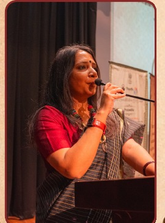
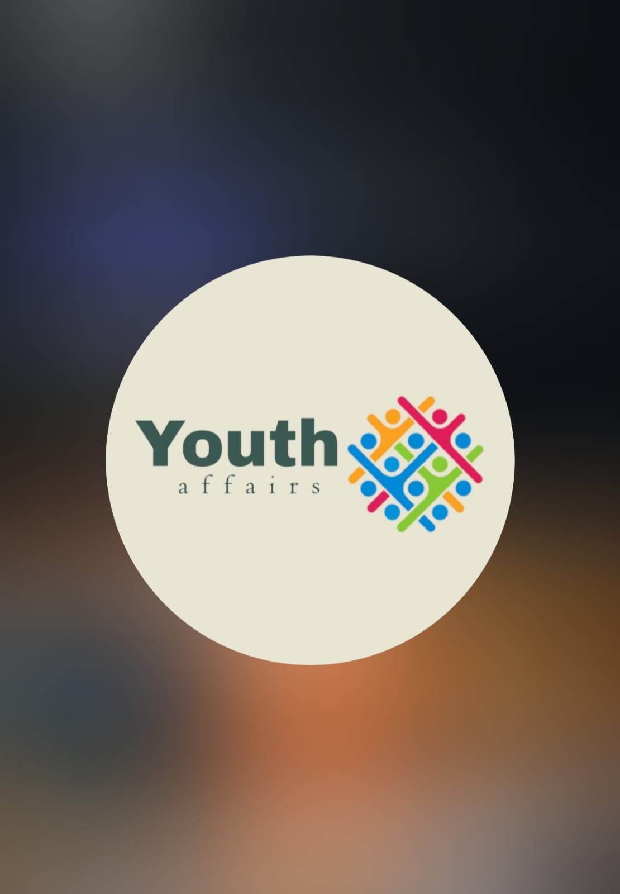
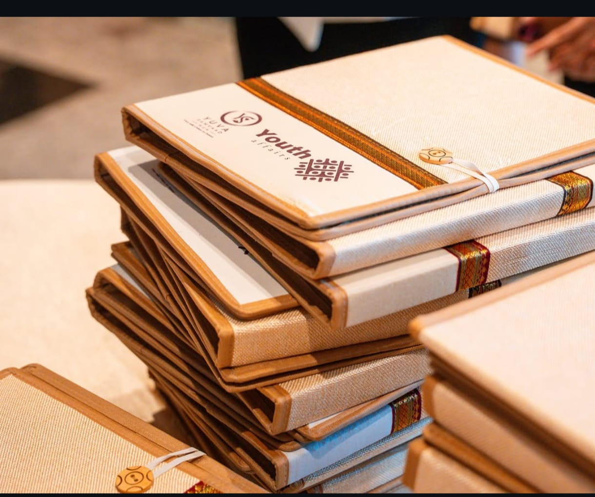
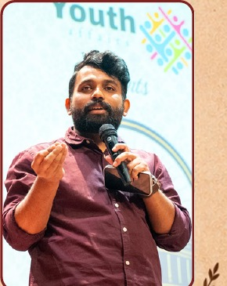
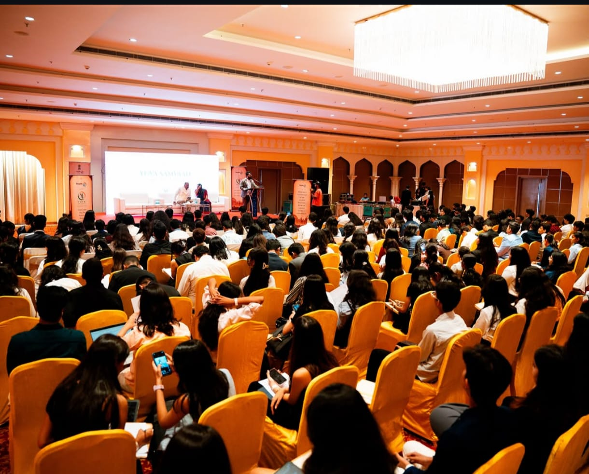
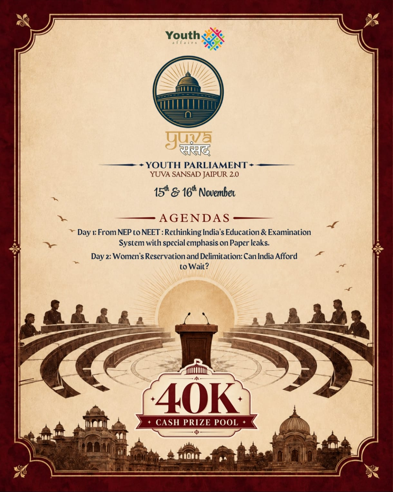
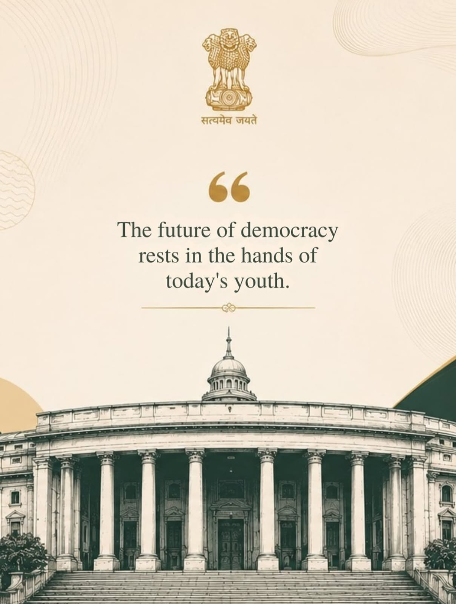

Sayantani
Founder

The future of democracy rests in the hands of today's youth.
Youth Affairs is dedicated to empowering young individuals, giving them a voice, and shaping their potential into leadership, innovation and social responsibility.

Youth Affairs creates spaces where curiosity is nurtured, critical thinking is encouraged, and diverse perspectives are valued. Through dialogue, debate and collaborative initiatives, young people are encouraged to engage with society responsibly, courageously and with purpose.
We aim to build a generation that is informed, empathetic and ready to drive meaningful change.
"We believe that democracy is strongest when every voice is heard, every perspective is respected, and every individual has the opportunity to participate in shaping society."
Empowering youth to be heard.
Building tomorrow's leaders today.
Encouraging ideas that create impact.
Inspiring action towards society.
Youth Affairs is built around the belief that young people should have the confidence, space and responsibility to participate in shaping society.

At Youth Affairs, we are committed to fostering dialogue, critical thinking and civic engagement among young people. In a world marked by inequality and division, we hope to create spaces where empathy, inclusivity and meaningful conversation drive positive change.
Youth Affairs remains committed to empowering young minds and building a generation that leads with purpose and compassion.

Yuva Sansad brings a real-time simulation of the Lok Sabha Parliament to life. Young participants step into the shoes of Indian lawmakers, debate, discuss and shape ideas in a space designed to mirror a parliamentary environment.
Youth Affairs says it has successfully conducted four Youth Parliaments across different cities, with Jaipur as the next chapter.
Yuva Sansad is designed to help young people understand perspectives, practise dialogue and build the confidence to represent real change. Every voice matters, and every idea can inspire action beyond the simulation.
Explore Youth Affairs' youth-parliament and MUN journey, from Rajasthan and Bengaluru to Yuva Samvaad MUN in Jaipur and the upcoming Jaipur 2.0.
An earlier Youth Affairs parliamentary simulation bringing young delegates into a structured environment for debate, policy discussion and civic participation.
A two-day Youth Parliament experience in Bengaluru, extending the Youth Affairs format to another city and engaging young participants in parliamentary dialogue.
Youth Affairs' latest Jaipur event, bringing the MUN format into a space for diplomacy, international affairs, negotiation and public speaking.
A two-day realistic Lok Sabha simulation with 200 exclusive seats, real Indian portfolios and a ₹40,000 cash prize pool.
Step into a realistic parliamentary simulation where every portfolio carries responsibility and every intervention has a purpose.
Everything delegates need to know before stepping into the House.
Selected visuals from Youth Affairs and Yuva Sansad. More past-event photographs are available in the shared album.



For registration or event-related queries, the brochure provides the following official contacts and social channels.